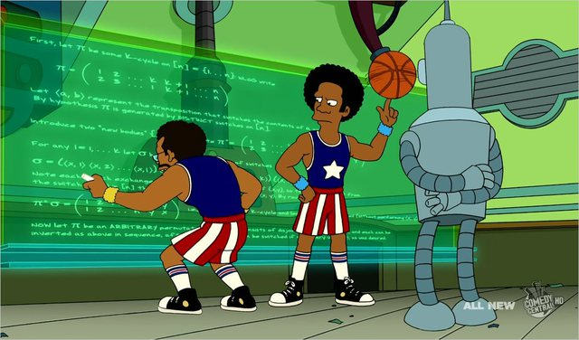

CAPITULO 7
HEMBRALGEBRA Y CHICALGORITMOS
Los franceses habian pensaron que matyematicamente seria tener un dia con diez horas, cada hora con cien minutos, y
cada minuto con cien segundos aunque despues abandonaron ese sistema.
Summers habla de por que las mujeres estan tan poco respetadas en el mundo academico, se ven reforzadas ppor lo que de hecho son factores
menores,como la socializacion y discriminacion continua. Decian que la habilidad mas amplia en los hombres que en las mujeres.
Quisieron explorar la cuestion de las mujeres en las matematicas y la ciencia.
las matematicas tenian que ser el tema mas facinante del mundo, hasta el punto de ignorar incluso la amenacza hacia su propia vida.
Lisa simpson haci como Germain habian adoptado una identidad masculina para poder estudiar matematicas.
Los numeros primos siempre se an considerado importante porque esos numeros primos siempre se han considerado omportantes,esos numeros son las piedras
angulares de las matematicas.
